本章名为代数方程组的求解,所以我们将从求解代数方程组的角度来引出一系列概念和算法.根据我们从解线性方程组得到的经验,我们需要发展一套消元方法,以使将方程组化为类似于三角阵的形状,这样引出两种算法.一是吴文俊院士于上世纪七十年代为实现几何定理机器证明而提出的吴方法,它不仅能进行机器证明,同时特征列是一种三角列使得它也可以用于代数方程组的求解.另外一种是Gröbner基方法,它除了将多项式组化为三角形的基可用于解方程外,还有可以进行多项式理想的计算等诸多用处.
如果只从几何证明的角度,吴方法无疑比Gröbner基要高效很多,正是如此,吴方法在几何证明领域中在世界上都是十分有名的.然而,吴方法毕竟相当于一种不完全的约化,其除法用的是伪除法,因而在解方程、多项式理想计算等方面不如Gröbner基.
另外,由高等代数学我们知道还可以利用结式的计算来进行消元,这一过程及其理论本身比较简单,因此下面我们先从介绍结式消元法开始.
 结式
结式
我们所说的结式一般都是指Sylvester结式,利用结式进行消元基于我们以前提过的一个命题(见推论3),现在重述如下:
 非平凡当且仅当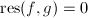.
非平凡当且仅当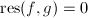.
现在我们考虑一个二元多项式方程组.设,我们可以把它们看成上关于 的一元多项式.那么利用上面的定理,我们有非平凡当且仅当.现在我们要求它们的公共根,不妨设是其一根,则有,故有关于
的一元多项式.那么利用上面的定理,我们有非平凡当且仅当.现在我们要求它们的公共根,不妨设是其一根,则有,故有关于 的方程
由此,我们实际上进行了消元,将方程组化为一个只关于的方程.
的方程
由此,我们实际上进行了消元,将方程组化为一个只关于的方程.
事实上,我们可以将这种消元方法推广到 个变元的情形.设变元分别为,则我们首先可以从个方程中取出对方程,两两用结式法消去
个变元的情形.设变元分别为,则我们首先可以从个方程中取出对方程,两两用结式法消去 ,之后得到个关于
,之后得到个关于 的方程,再将此过程递归做下去,最终可求出方程的解.
的方程,再将此过程递归做下去,最终可求出方程的解.
吴方法
一些基本概念
吴方法也称为特征列方法,这原本是由J. F. Ritt 在它的关于微分代数的工作中引入, 上个世纪70年代末,吴文俊在建立几何定理机器证明时大大发展了这一领域.它同Gröbner基类似,也是一种消元方法,在几何定理证明,代数方程求解等方面均有很重要的应用.关于吴方法,可以参考[1],[2],也可见吴文俊本人的著作[3]4.3节.
下面设 是一特征为0的域,,并取字典序为.
是一特征为0的域,,并取字典序为.
 ,记
,记 中含最大的下标
中含最大的下标 ,定义它的类.即其中非0常数的类定义为0.
,定义它的类.即其中非0常数的类定义为0.
 如果下列条件之一满足:
如果下列条件之一满足:
- ,
- 0\wedge\deg_pf<\deg_pg$" class="latex-inline" style="vertical-align: -7px" width="281" height="20">.
若,则称(级别相同).
 对
对 是约化的（这里与我们在之前一章所说的约化的定义不大一样）,记为.
是约化的（这里与我们在之前一章所说的约化的定义不大一样）,记为.
 ,.
,.
下面记0$" class="latex-inline" style="vertical-align: -5px" width="95" height="18">,且 首先
当相对不约化时,即m$" class="latex-inline" style="vertical-align: -1px" width="54" height="13">,我们可由下面定义的伪除法将其约化.
升列
我们引入一系列的定义.
 且,
且,- 1$" class="latex-inline" style="vertical-align: -1px" width="37" height="12">,且,且i$" class="latex-inline" style="vertical-align: -4px" width="44" height="16">,有.
由升列的定义我们知道升列的项数 必然不大于未定元个数.
必然不大于未定元个数.
- ,使得g_j,$$" class="latex-display" width="580" height="18">
 且.
且.
若,则称二者级别相同,记为.
下面的定理很重要,是特征列方法的基础.
我们再考虑时 中第2个多项式构成的序列同样的分析给出使得时有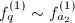,由于每个升列都有,我们将这个过程继续下去总会终止,于是可找到,使得时,且.
□
中第2个多项式构成的序列同样的分析给出使得时有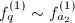,由于每个升列都有,我们将这个过程继续下去总会终止,于是可找到,使得时,且.
□
基本列
设 是一有限非零多项式的集合,其中必含有升列,我们记从中选出的升列的全体集合为.
是一有限非零多项式的集合,其中必含有升列,我们记从中选出的升列的全体集合为.
 是当中的一个极小元,则称
是当中的一个极小元,则称先取 为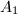中的某个最小元,若则已是基本列.若0$" class="latex-inline" style="vertical-align: -5px" width="71" height="18">,记.若中元素对均未约化,则仍然是基本列,否则记中对约化的多项式全体为.
为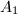中的某个最小元,若则已是基本列.若0$" class="latex-inline" style="vertical-align: -5px" width="71" height="18">,记.若中元素对均未约化,则仍然是基本列,否则记中对约化的多项式全体为.
,显然有.倘若,则与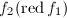矛盾.故f_1$" class="latex-inline" style="vertical-align: -4px" width="51" height="16">,由于,则只能\cl{f_1}$" class="latex-inline" style="vertical-align: -5px" width="102" height="18">.
再取 为中的某个最小元,若中元素关于都未约化,则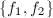已是基本列,否则可以构造出
为中的某个最小元,若中元素关于都未约化,则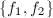已是基本列,否则可以构造出
由于的类是严格增加的,则上述过程必能有限步终止,得到基本列. □
鉴于基本列的存在性,我们记集合的全体基本列的集合为.
是非零多项式有限集,,0$" class="latex-inline" style="vertical-align: -5px" width="71" height="18">,设是一非零多项式,且,设 ,则.
,则.
 ,则满足要求.
,则满足要求.
若 ,则使得,又由于,则,故满足要求.
,则使得,又由于,则,故满足要求.
若\cl{f_r}$" class="latex-inline" style="vertical-align: -5px" width="94" height="18">,则满足要求. □
特征列与解方程
 显然对
显然对下面给出特征列的定义:
对于上面的算法过程,设其在时终止,我们很容易有如下断言:
而对于算法的终止性,由定理4可知我们得到如下的递降基本列: 由于Ritt引理,我们可以断言在某一步,例如时,算法会终止,即此时会得到.
关于特征列和多项式零点的关系,有如下的定理:
 ,则必有某个使得,此时易知,若,则,因此有左右.
□
,则必有某个使得,此时易知,若,则,因此有左右.
□
首先我们证明若,则 .由于是特征列中的初式,则显然有.因此.
.由于是特征列中的初式,则显然有.因此.
再用递归思想,对每个不为零的,分解,若其特征列不是矛盾列,则可得到递减的特征列序列,由定理4可知其必有限终止,可化为本定理形式. □
Gröbner基
Gröbner基是Buchberger在1965年于其博士毕业论文中提出,最初是用来解决多项式方程组的问题.其后经过发展,它在多元多项式环的理想等问题上也有重要的应用.[4]一书对此有详细介绍,另外[5],[2]对此也有介绍.
一些概念与介绍
我们主要是为了处理多元多项式而引入了Gröbner基,因此我们先给出一些记号上的说明.
设为一域,以 表示个不定元,则记多项式环,设有个多项式,由它们生成的理想记作
表示个不定元,则记多项式环,设有个多项式,由它们生成的理想记作
显然我们有,且.
采用上面的记号,显然是 的基,我们知道,在一元多项式环中,由于其是主理想环,我们有 且对于任何一个多项式,将其对作Euclid除法得到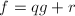,则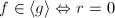.但对于多元情形,这些良好的性质未必成立,比如
的基,我们知道,在一元多项式环中,由于其是主理想环,我们有 且对于任何一个多项式,将其对作Euclid除法得到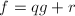,则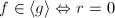.但对于多元情形,这些良好的性质未必成立,比如
对于指标,定义,称为单项式(Monomial),将全体单项式集合记作.
我们可以定义 中的一种良序,使其满足与加法的和谐性,即对任何三个指标
中的一种良序,使其满足与加法的和谐性,即对任何三个指标 ,,,有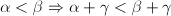.下面给出几个序的例子:
,,,有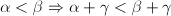.下面给出几个序的例子:
 是1-范数.
是1-范数.
我们一般取字典序即可,就以来表示,在该序下,我们可以定义多项式的领项,领项系数和领项单项式.一个多项式次数的定义为.有了这些概念,我们可以像在一元多项式环中那样做带余除法,下面给出 中带余除法的算法:
中带余除法的算法:
 ,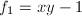,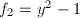.
来约化,得到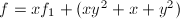,第二步我们可以用或来约化,简单计算我们发现若这一步用来约化,得到结果反之则得到
,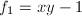,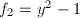.
来约化,得到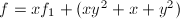,第二步我们可以用或来约化,简单计算我们发现若这一步用来约化,得到结果反之则得到 我们看到,约化的顺序不同会导致结果不同,这也是多元多项式环区别于一元多项式环的性质之一.
我们看到,约化的顺序不同会导致结果不同,这也是多元多项式环区别于一元多项式环的性质之一.
由前面约化结果的不唯一性我们知道并不能用余式是否为零来判断一个多项式是否在所考察的理想中,为了解决种种在多元多项式环中出现的问题,我们需要引入Gröbner基.
单项式理想及一些准备定理
单项理想即是指由一些单项式生成的理想,若是的一个子集,定义.
中每个单项必可被某个整除.
(2)(3)和(3)(1)均显然. □
由引理第二个等价条件得到:
设 为的极小元集合,即.
为的极小元集合,即.
于是,如若不然,首先,即非极小元,必存在,矛盾.因此,即.又,因而.
下面我们证明是有限集.对于一元 的情况,由于是全序,则是单元集,命题显然成立.下面假设命题对于
的情况,由于是全序,则是单元集,命题显然成立.下面假设命题对于 的情况也是成立的,命 则的极小元集是有限集.,我们可取使得,由于的有限性,我们可取最大值 于是,使得,假设b$" class="latex-inline" style="vertical-align: -2px" width="49" height="14">,则 即不是极小元.因此中任一极小元必满足,那么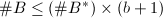是有限的.由归纳法,本定理得证.
□
的情况也是成立的,命 则的极小元集是有限集.,我们可取使得,由于的有限性,我们可取最大值 于是,使得,假设b$" class="latex-inline" style="vertical-align: -2px" width="49" height="14">,则 即不是极小元.因此中任一极小元必满足,那么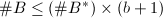是有限的.由归纳法,本定理得证.
□
不可再被 约化.而由于,于是,即中每个单项都在中,因此,则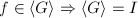.
□
约化.而由于,于是,即中每个单项都在中,因此,则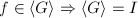.
□
由于任何单项理想均可有限生成,我们有下面的:
中有一理想升链,则存在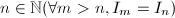n,I_m=I_n)$" class="latex-inline" style="vertical-align: -5px" width="175" height="18">.
这可由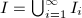是有限生成的得到.满足这样条件的环也叫诺特环(Noetherian Domain).
Gröbner基及其性质
现在引入Gröbner基的定义:
我们记理想的全体Gröbner基为,即
Gröbner基的存在性是由Hilbert基定理和引理3保证的,它有如下的性质:
当考察的是Gröbner基时,我们也记或 .
.
 ,分别是两种不同途径约化的结果.则可被中元素整除.由的定义可知.
□
,分别是两种不同途径约化的结果.则可被中元素整除.由的定义可知.
□
构造理想的Gröbner基需要一种称为S-多项式的概念,下面简要讨论之.
 ,设,,,即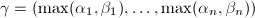,则定义
,设,,,即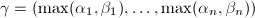,则定义 中而使定理条件形式仍不变,于是.由于,则有.
中而使定理条件形式仍不变,于是.由于,则有.
由于 首项消去告诉我们,因此.
不妨设, 则
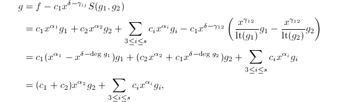
显然,由此时的形式和归纳法,我们可以证明可以表成定理中的形式.
□
下面的定理给出了判别Gröbner基的一个充要条件:
.令,由定义需证明即可.
不妨设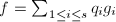,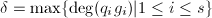,则显然.倘若等号不成立,即,定义 它显然满足引理6的条件,可写为的线性组合,因而其在下约化为零.由带余除法,存在使得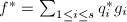且.由 的定义可知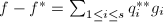,
的定义可知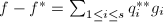, .于是也可以表示成 这与
.于是也可以表示成 这与 的定义矛盾,故,即使,因此
的定义矛盾,故,即使,因此
证毕. □
Buchberger算法及约化Gröbner基
Buchberger提出了Gröbner基的概念并给出了计算它的方法,即下面的Buchberger算法:
即是Gröbner基.因为每步循环之后我们都可以得到一个新的集合,我们给它们编上号,记为,显然 由理想升链定理,使得n$" class="latex-inline" style="vertical-align: -1px" width="56" height="13">有,此时,令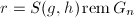,则显然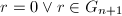,于是 ,由是多项式对的约化结果知道,于是算法终止.
□
,由是多项式对的约化结果知道,于是算法终止.
□
多项式理想的Gröbner基并不是唯一的,而且在上面的算法中的规模的增长是十分迅速的,因此我们要对Gröbner基作一定的优化,下面我们一步一步对其进行约化化简.
 ,不可再被约化,即中任何一单项均不在理想中,则称关于是约化的.若,关于都是约化的,则称是约化Gröbner基(Reduced Gröbner bases),并简记为
,不可再被约化,即中任何一单项均不在理想中,则称关于是约化的.若,关于都是约化的,则称是约化Gröbner基(Reduced Gröbner bases),并简记为 (或由下面的唯一性可记为).
化为的极小Gröbner基,设此时,然后对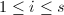归纳地做.由极小Gröbner基的条件知道.于是由相对于约化可知其相对于也是约化的.
(或由下面的唯一性可记为).
化为的极小Gröbner基,设此时,然后对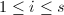归纳地做.由极小Gröbner基的条件知道.于是由相对于约化可知其相对于也是约化的.
唯一性.设均是的约化Gröbner基,则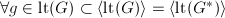,使,同样地,使,因此,由于约化Gröbner基也是极小Gröbner基,我们知道，再由对称可证.
,取使得.由于约化,则中任一单项式均不能被中元素约化.于是. □
Buchberger算法的两个改进
Buchberger算法复杂性膨胀得很厉害,因而需要对其作一定的优化.[4]3.3节提出了两种改进的方法.首先从算法3本身可以看到它比较啰嗦,实际上是采用下面的算法:
 ,首先令,然后在上面算法每次第4步判断成功后,设带余除法给出
,首先令,然后在上面算法每次第4步判断成功后,设带余除法给出 ,设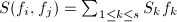,其中,,其余的.则由 可知有迭代,输出最后的
,设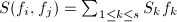,其中,,其余的.则由 可知有迭代,输出最后的 即可.
即可.
第一个改进
此引理由Gröbner基的定义可证.
 ,,,则下面两个条件等价:
,,,则下面两个条件等价:
 ,是余下的部分,于是
,是余下的部分,于是
(I)若,则,
(II)若,由得 若它能被约化,则由知,这与矛盾.
(III)若 ,这与情形(II)类似.
(IV)若,此时经过计算可知 我们断言.假设二者相等,则,由于和互素,我们得到,矛盾.不妨设此时\lm{g'f}$" class="latex-inline" style="vertical-align: -5px" width="130" height="18">,则第一步仅可通过约化,其结果为 对于相反的情形如法炮制,得到第一步的约化结果仍然可进行同样的讨论,只需将其中的看作即可.于是这样的约化过程可一直继续,直至约化为0.
综上,我们在的情况下证明了(1)(2).当时,我们有,于是,即是Gröbner基,由引理6可知也是Gröbner基,命题得证.
(2)(1).(I)首先我们仍然设,取单项式满足 于是,由假设是Gröbner基,我们进行带余除法可以得到多项式
于是,由假设是Gröbner基,我们进行带余除法可以得到多项式 使得,且.整理之可得因此,又 则,亦即,互素.
使得,且.整理之可得因此,又 则,亦即,互素.
(II)当时,则,于是由是Gröbner基可知是Gröbner基,因而,互素. □
我们可以由此得到Buchberger算法的第一个修正,在计算S-多项式并约化之前由是否互素来决定是否要计算.
第二个改进
 考虑任一单项式,则在上式中含的同类项合并之后为
考虑任一单项式,则在上式中含的同类项合并之后为 ,因此我们可只考虑这些项,将其分离出来.可设,其中或,设是中不为零的系数重新编号,于是有,则
,因此我们可只考虑这些项,将其分离出来.可设,其中或,设是中不为零的系数重新编号,于是有,则
![\begin{align*}
h=&(h_1,\ldots,h_s)=c_{i_1}'X_{i_1}'e_{i_1}+\cdots+c_{i_t}'X_{i_t}'e_{i_t}\\
&=c_{i_1}'c_{i_1}\frac{X}{c_{i_1}X_{i_1}}e_{i_1}+\cdots+c_{i_t}'c_{i_t}\frac{X}{c_{i_t}X_{i_t}}e_{i_t}\\
&=c_{i_1}'c_{i_1}\frac{X}{X_{i_1i_2}}(\frac{X_{i_1i_2}}{c_{i_1}X_{i_1}}e_{i_1}-\frac{X_{i_1i_2}}{c_{i_2}X_{i_2}}e_{i_2})\\
&+(c_{i_1}'c_{i_1}+c_{i_2}'c_{i_2})\frac{X}{X_{i_2i_3}}(\frac{X_{i_2i_3}}{c_{i_2}X_{i_2}}e_{i_2}-\frac{X_{i_2i_3}}{C_{i_3}X_{i_3}}e_{i_3})+\cdots\\
&+(c_{i_1}'c_{i_1}+\cdots+c_{i_{t-1}}'c_{i_{t-1}})\frac{X}{X_{i_{t-1}i_t}}(\frac{X_{i_{t-1}i_t}}{c_{i_{t-1}}X_{i_{t-1}}}e_{i_{t-1}}-\frac{X_{i_{t-1}i_t}}{c_{i_t}X_{i_t}}e_{i_t})\\
&+(c_{i_1}'c_{i_1}+\cdots+c_{i_t}'c_{i_t})\frac{X}{c_{i_t}X_{i_t}}e_{i_t}.
\end{align*}](latex/latex2png-EqSolving_157563768_.gif)
注意到上式最后一项为零,得证. □
 生成的的子模中.
生成的的子模中.
 是
是 的生成元集,若使,且,则也是的生成元集.
的生成元集,若使,且,则也是的生成元集.
由此推论我们可以得到Buchberger算法的第二个改进,即某些S-多项式可能是其它两个S-多项式的线性组合,可以不予计算.这一步,能够显著提高Buchberger算法的效率.
改进后的算法
输入:多项式,
输出:理想的Gröbner基.
- ,,,,
- 当时,循环做:,,,
- 当时,循环做后面所有步骤,否则输出退出,
- 任选,令,,
- 若,则做下面6、7步,
- ,
- 若
 则,
则, ,,.
,,.
上面算法中函数是第二个改进判别法,由下面算法给出,其中的:
,输出简化后的.
- ,
- 当时循环做下面3-7步,否则转8步,
- 若
 则令并做下面4-6步,否则转7步,
则令并做下面4-6步,否则转7步, - 当时循环做下面5,6步,否则转7步,
- 若则看是否成立,是则令,
- ,
 ,
,- ,
- 若则做下面10-14步,否则转15步,
- 若则令
 并做下面11-13步,否则转14步,
并做下面11-13步,否则转14步, - 当时做下面12,13步,否则转14步,
- 若
 则看是否成立,是则令,
则看是否成立,是则令, - ,
- ,
- 输出.
Gröbner基的应用
一些简单的应用
现在我们可以回到本章开头所提出的一些关于多元多项式理想的问题上来了.我们要解决的第一个问题是对于任何一个多项式,如何判断它在不在一个已知的理想中,以及找出多项式使得.
首先我们根据前面生成Gröbner基的算法,不仅得到了约化的Gröbner基,而且可以得到变换矩阵使得.我们利用除法算法可以得到多项式满足,于是由知.
对于两个多项式理想是否相等的判定,也可由它们唯一的约化Gröbner基来进行.而在商环中的算术需要用到代表元,我们也可取为.下面定理给出了商环的一组基.
中的求逆问题.设,我们既已知道了该环的基,则可设为的元素的线性组合来求解,这比较复杂.我们设是的逆,注意到则我们可以求的Gröbner基,看1是否在其中来确定是否存在逆.再求出 在中的线性表示,即,即是在中的逆.
在中的线性表示,即,即是在中的逆.
Hilbert零点定理(Hilbert Nullstellensatz)及Gröbner基在解方程中的应用
现在考虑的某个扩域.
 .
.
 ,定义理想.
,定义理想.显然有,.
个分量,取非零多项式使得,令,则,于是使得,则是的幂,中有元素满足为的幂.
(2)(3).对于的基,一定满足,维数不超过,因此它是有限维的.
(3)(1).考虑多项式集合,由于在中维数有限,则它们一定线性相关,即存在使得,亦即,该多形式在中零点有限,至多为 个,不妨设其零点集为
个,不妨设其零点集为 ,于是
,于是 是有限集.
□
是有限集.
□
显然,是一有限集,此基的形式正如推论所说,由此我们可以由第一个一元多项式方程解出其根,代入第二个方程解出第二个变元,依次迭代下去即可解出所有的根.
方程组解的结构的一些讨论
现在为了方便起见,将所讨论的域限定为复数域 ,由上一小节所讨论的内容,我们很容易推广到如下结论:
,由上一小节所讨论的内容,我们很容易推广到如下结论:
 .当消元理想是非平凡理想时,其是一元多项式环上的理想,因而是一个主理想,可设其由生成,首一且,则对任何单项序有.由此易得是上有限维线性空间.
□
.当消元理想是非平凡理想时,其是一元多项式环上的理想,因而是一个主理想,可设其由生成,首一且,则对任何单项序有.由此易得是上有限维线性空间.
□
[8]P46给出了如下定理:
,先证其为一根理想.我们先将诸 (记)进行上的因子分解,得到其中由无平方部分的性质可知互不相同.由可得同样地对于其它可得对于每一项,都是极大理想,因而是有限个极大理想的交集,即有限个根理想的交集,仍然是根理想.
(记)进行上的因子分解,得到其中由无平方部分的性质可知互不相同.由可得同样地对于其它可得对于每一项,都是极大理想,因而是有限个极大理想的交集,即有限个根理想的交集,仍然是根理想.
由的定义显然有,又由于的零点全在中,于是,取根理想有.
□
下面我们给出一个有用的引理:
 后,取即可.
后,取即可.
对于可类似构造. □
下面的定理给出了方程组根的个数的估计([8]P47).
Gröbner基和特征值法解方程组
在用Gröbner基理论将方程组化为三角形列后,采用一步步迭代来算会引入累积误差,[8]2.4节给出了一种方法,用于求解的任何一个分量,同时也给出了求消元理想的首一生成元的快速方法.设,首先我们定义
很显然可以验证这样定义的线性映射具有一定的和谐性,即,有.只需逐一验证,即可.
下面的定理给出了求解的方法:
 是的特征值,
是的特征值,.不妨设,由特征值的定义知,使得特征方程成立.令,则.令,有,设满足,定义 则.将其作二项式展开,可得满足,即,故矛盾.
.设,由,故 .
□
.
□
的代数结构,我们可以用计算量较小的分级字典序求出Gröbner基,得到上的基,以此来进行特征值的计算.
参考文献
[1]计算机代数, 清华大学出版社, 北京, 2004.
[2]计算机代数基础---代数与符号计算的基本原理, 科学出版社, 2005.
[3]几何定理机器证明的基本原理（初等几何部分）, 科学出版社, 北京, 1984.
[4]An Introduction to Gröbner Bases, American Mathematical Society, 1994.
[5]Modern Computer Algebra, Cambridge University Press, 2002.
[6]Algebra, Springer Verlag, Berlin and New York, 1974.
[7]代数学, 湖南教育出版社, 长沙, 1985.
[8]计算代数与应用, 武汉大学出版社, 武汉, 2002.